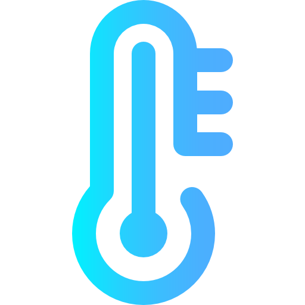
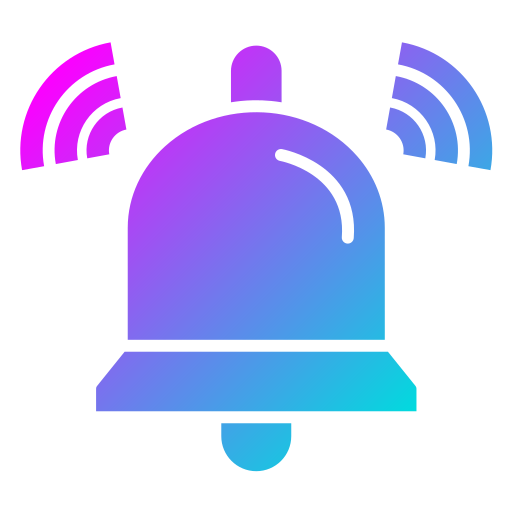
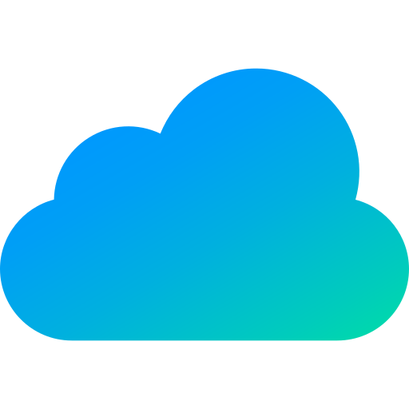

Nosso Objetivo
mais que monitorar,
é proteger a sua pesquisa.
Nosso objetivo é garantir a integridade dos biotérios por meio do monitoramento contínuo da temperatura, utilizando tecnologia IoT para gerar alertas e manter um ambiente estável para os experimentos.

Monitoramento Contínuo
Acompanhamos a temperatura dos biotérios em tempo real, 24 horas por dia, 7 dias por semana.

Alertas Inteligentes
Identificamos variações de temperatura e notificamos a equipe antes que o problema afete os experimentos.

Dados e Rastreabilidade
Acompanhamos a temperatura dos biotérios em tempo real, 24 horas por dia, 7 dias por semana.
Segurança para a Pesquisa
Com tecnologia e automação, ajudamos a manter a estabilidade do ambiente e a qualidade dos seus resultados.
Calculadora de economia e prevenção
Quanto sua operação pode deixar de perder?
Simule o impacto financeiro de perdas causadas por variações de temperatura e descubra quanto o monitoramento pode ajudar a preservar.